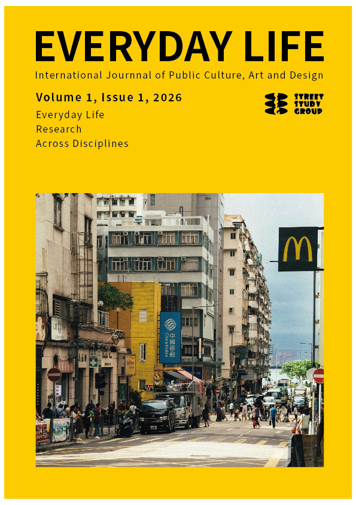

Journaling on the Margins: Field Notes on Urban Poverty and Informality in Nairobi
Vasiliki Apostolaki

Current Issue
No articles have been published in this section yet.
No articles have been published in this section yet.
Vasiliki Apostolaki
Shitong Sun
Gillian Der 謝美華 and Ragnar Kjartansson